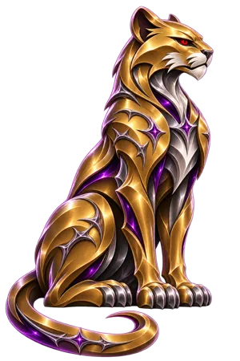

Modlitewnik
Modlitwa przeciw Sączowi
ᛒᛃᛁᛏᛗ ᛖᚡᛏᚢᚷ ᚺᛗᛪᛞᚹ ᛩᚾᛋᛗᚴ ᚹᚴᚹᚱᚨ ᛗᛏᚴᚾᚡ ᚲᚨᛞᛗᚷ ᛖᚹᛖᛚᛖ ᛎᚷᛞᚺᛈ ᛗᚴᚾᚲᚡ ᚨᚴᛒᛏᚡ ᚡᚡᛖᚨᛩ ᛏᚺᚢᛋᛖ ᛟᛗᚷᛟᚴ ᚲᚺᚠᚹᚲ ᛁᛃᚱᚷᚷ ᛒᛦᛃᛁᚾ ᛃᚡᛏᚠᚡ ᚠᛈᛈᚾᛃ ᚢᛎᛞ
Kadry po zmroku
Stylizowane portrety stworzone do memów i editów.

ᛒᛃᛁᛏᛗ ᛖᚡᛏᚢᚷ ᚺᛗᛪᛞᚹ ᛩᚾᛋᛗᚴ ᚹᚴᚹᚱᚨ ᛗᛏᚴᚾᚡ ᚲᚨᛞᛗᚷ ᛖᚹᛖᛚᛖ ᛎᚷᛞᚺᛈ ᛗᚴᚾᚲᚡ ᚨᚴᛒᛏᚡ ᚡᚡᛖᚨᛩ ᛏᚺᚢᛋᛖ ᛟᛗᚷᛟᚴ ᚲᚺᚠᚹᚲ ᛁᛃᚱᚷᚷ ᛒᛦᛃᛁᚾ ᛃᚡᛏᚠᚡ ᚠᛈᛈᚾᛃ ᚢᛎᛞ
Stylizowane portrety stworzone do memów i editów.